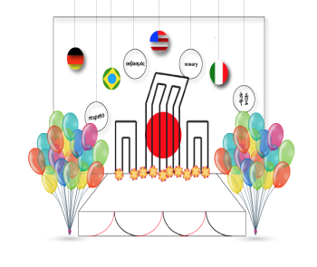
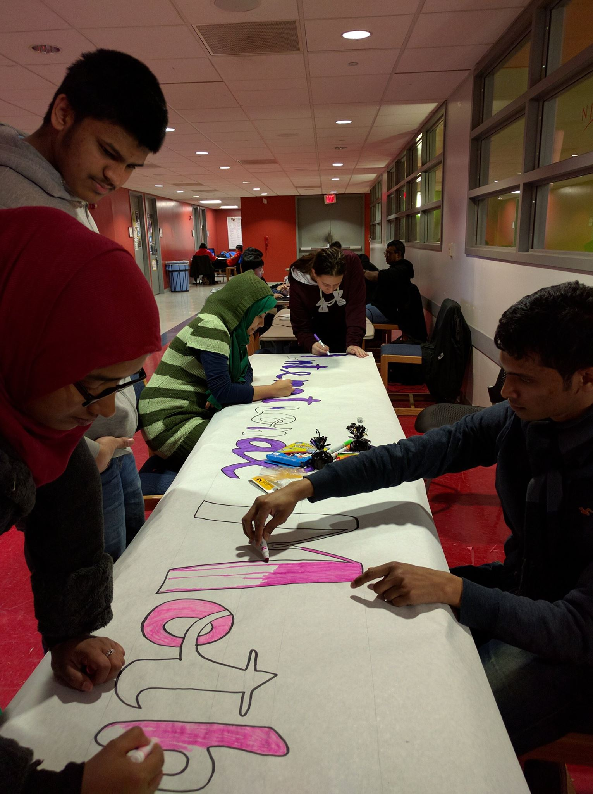
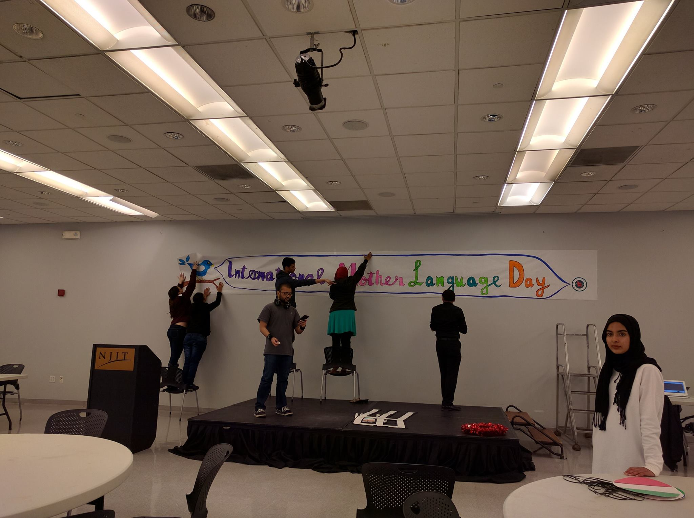
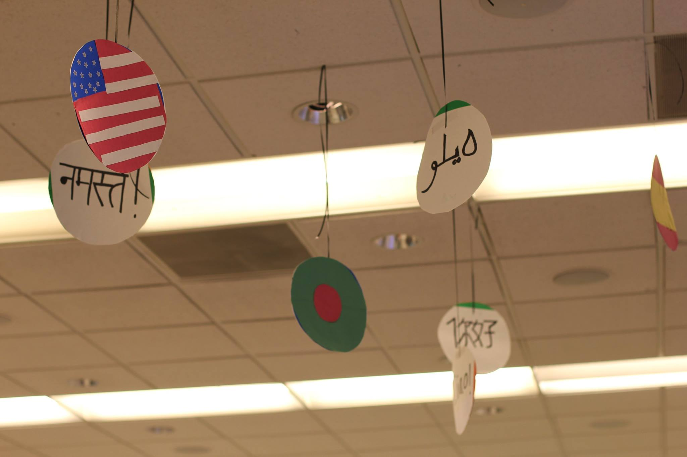
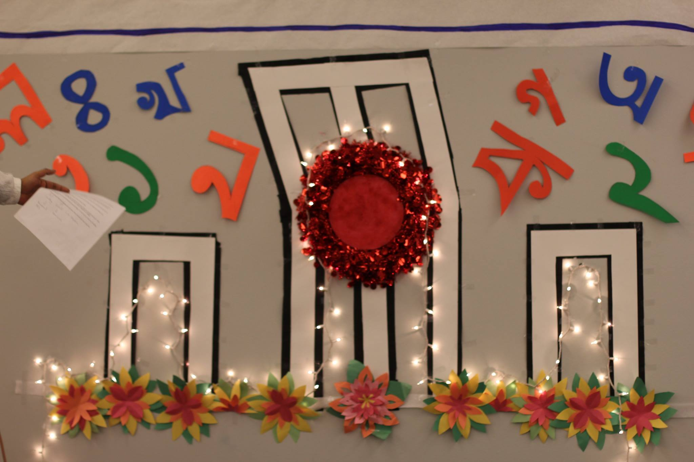
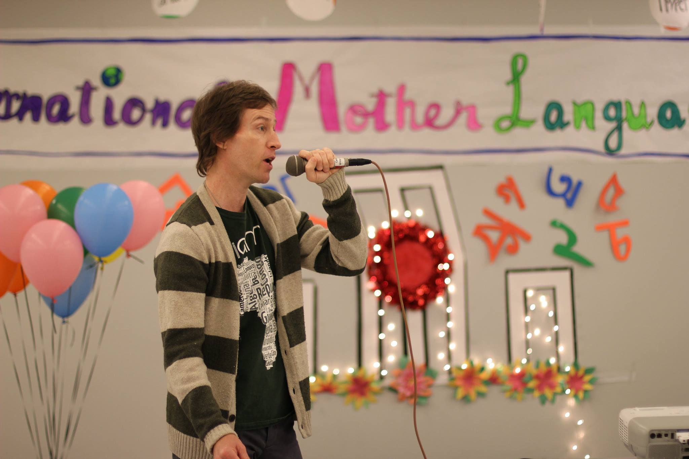

I have always loved to learn about cultures from around the world, learning about people and what makes them happy,
well, quite frankly, makes me happy. I joined the Bangladeshi Student's Association not too long after I started
NJIT. They were all welcoming and warm people who treated me like I was a member of there already growing family.
I learned about their beautiful country of Bangladesh and the culture and customs they cherish and help keep
alive, even in a new country. I was asked, by the presidents of the organization, to lead and organize one of their major events on campus:
International Mother Language Day. It is celebrated to honor and defend one's own mother language. It is, what I believe,
to be the essence of Bangladeshi culture: tolerance for all, which was the theme I wanted to convey most from this
event on campus.
I first started to draw up ideas in my head of how I wanted to decorate the event space. I first drew up an idea on pen and paper and then created a visual in Adobe Illustrator.

I wanted to incorporate a model of the Shaheed Minar, a national monument in Bangladesh's capital Dhaka. The monument was established
specifically for International Mother Language Day, to commemorate those who were killed during the Bengali Language Movement.
To showcase the celebration of all languages, I decided to hang flags from all around the world that said "hello!" in their respective language. The day is celebrated with lots of color, which
is no stranger to the colorful culture Bangladesh already has, so I decided to have lots of balloons, flowers, and ribbon surrounding the Shaheed Minar.
During this time, the Bangladeshi Student's Association was a new organization, so, funds were very tight for events. I took on the challenge of buying all the decorative materials for the event for under $100.00 and spent a little under that!
The day of, I worked on drawing a banner to hang on the wall of our event space. It was a long process, but I inspired our members and some non-members to help!

After we created the banner, I led the decorations team in setting and hanging everything up.

I spent my time that day between continuing to make decorations and directing volunteers to set it all up.


The event was a huge success with the highest turnout we had thus far. We had talent showcased from all over including Bengali singers, Indian musicians and we even had an NJIT professor perform original Bengali inspired poetry.

Although I did not use much technology for the planning of this event, I always apply design concepts to every aspect of my life. Understanding and empathizing with the Bangladeshi Student's Association students and their
culture, helped create the vision I had for their event. Quickly drawing and prototyping a design space from the vision in my head is exactly what I do when I redesign user interfaces. Guiding and executing, leading by example and inspiring
others to help are just a few of the characteristics I try to embody as a leader. I am thankful for this opportunity where I was able to execute my vision among platforms other than interfaces. Taking part in these experiences only help to build and grow, not only as a designer, but a person as well.